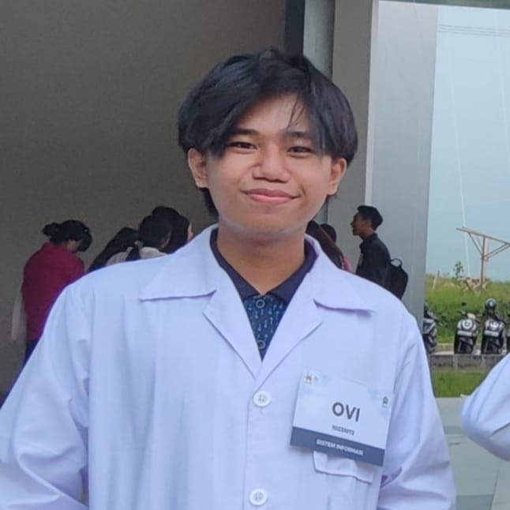

Welcome to my portfolio!
Hallo, saya senang berbagi perjalanan saya dengan Anda. Di sini, Anda akan menemukan perpaduan antara kreativitas dan inovasi, menampilkan proyek, layanan, dan wawasan saya. Baik Anda mencari inspirasi atau kolaborasi, Anda berada di tempat yang tepat. Jelajahi, terhubung, dan mari kita jalani petualangan ini bersama!
About Me
Hallo! Perkenalkan saya Noviansayah, Seorang mahasiswa Institut Teknologi Kalimantan Program Studi Sistem Informasi angkatan 23! Saya sangat suka bermain game dan juga saya sangat suka mempelajari hal yang baru tentang komputer khususnya memplejari tentang bahasa pemrograman. Sejauh ini saya sudah mempelajari bahasa pemrograman Python, JavaScript, HTML, CSS, php, dan juga beberapa lainnya.
My Services
-
Web Development
proses menciptakan situs web dan aplikasi berbasis web yang dapat diakses melalui internet. Layanan ini mencakup berbagai aspek, mulai dari desain, pengkodean, hingga pemeliharaan situs. Layanan web development sangat penting bagi bisnis yang ingin memiliki kehadiran online yang kuat. Dengan kombinasi desain yang menarik, fungsi yang handal, dan pemeliharaan yang baik.
-
UI/UX Design
Layanan UI/UX design sangat penting untuk menciptakan produk digital yang tidak hanya menarik secara visual tetapi juga memberikan pengalaman yang memuaskan bagi pengguna. Dengan memadukan desain yang estetis dengan fungsionalitas yang intuitif, produk digital dapat mencapai tujuan bisnis dan membangun loyalitas pengguna.
-
Responsive Design
Desain Responsif adalah pendekatan dalam pengembangan situs web dan aplikasi yang memastikan tampilan dan fungsionalitas yang optimal di berbagai perangkat, mulai dari komputer desktop hingga tablet dan smartphone. Dengan semakin banyaknya pengguna yang mengakses internet melalui perangkat mobile, desain responsif menjadi sangat penting. Berikut adalah beberapa elemen kunci dari layanan responsive design.
Contact Me
Email: 10231072@student.itk.ac.id
WhatsApp: +62812 5390 5570